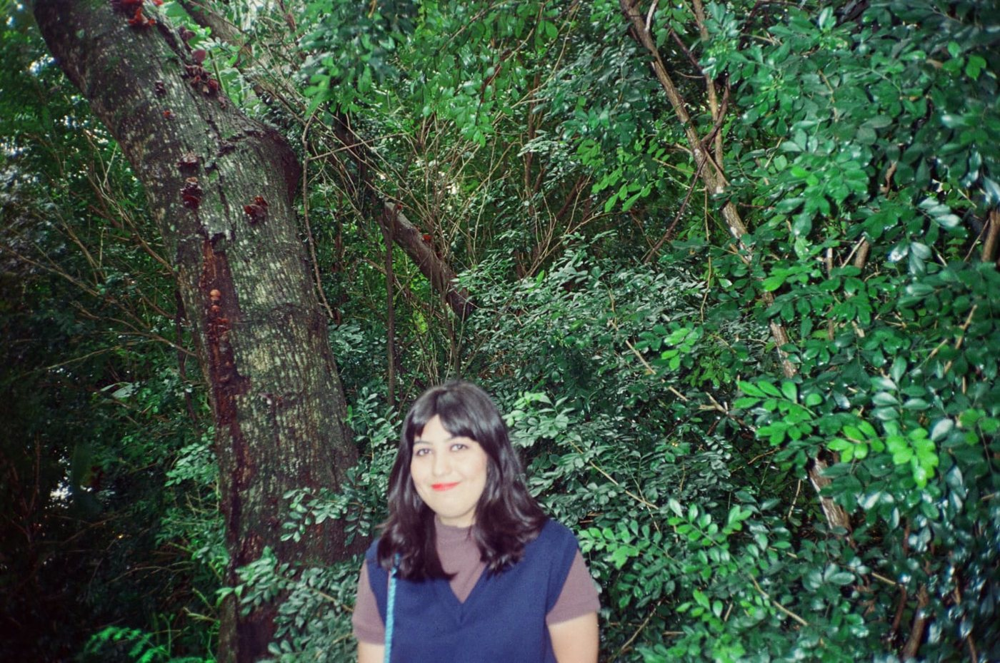

Olá, eu sou a Ingrid!
Sou UX Designer e Researcher, com trajetória em Administração Pública e Análise de Dados. Trago uma perspectiva multidisciplinar à pesquisa, ao desenvolvimento e à evolução de produtos digitais.

Sobre mim
Sou UX Designer com foco em pesquisa, formada em Gestão de Políticas Públicas e pós-graduada em Análise de Dados e em UX Design. Integro perspectivas dos usuários e análise de dados para compreender necessidades, identificar oportunidades e fundamentar decisões de produto.
Minha experiência nos setores público e privado, aliada à formação em análise de dados, orienta minha atuação em UX. Tenho interesse especial em pesquisa com usuários, análise de comportamento e interpretação de dados qualitativos e quantitativos para gerar aprendizados, identificar padrões e orientar decisões ao longo do desenvolvimento de produtos digitais.
Atualmente, sou Content Lead na comunidade UX Brasília e UX Designer no Movimento Futuro.
- Gestão de Políticas Públicas · UnB2023
- Gestão e Análise Estratégica de Dados · PUC-MG2024
- UX Design · SENAC-DF2026
Dos dados ao design.
- Pesquisa qualitativa e quantitativa
- Testes de usabilidade
- Arquitetura da informação
- Wireframes e protótipos
- UX Writing
- Visual design
- Handoff para desenvolvedores
- Análise de métricas
- Metodologias ágeis
- Figma
- Miro
- Maze
- Power BI
- SQL
- Claude
- Gemini
- ChatGPT
- IA generativa
Projetos
Vamos conversar?
Disponível para projetos, oportunidades e colaborações.
- E-mailferreiras.ingrid@gmail.com
- LinkedIn/in/ingrid-ferreira-oliveira